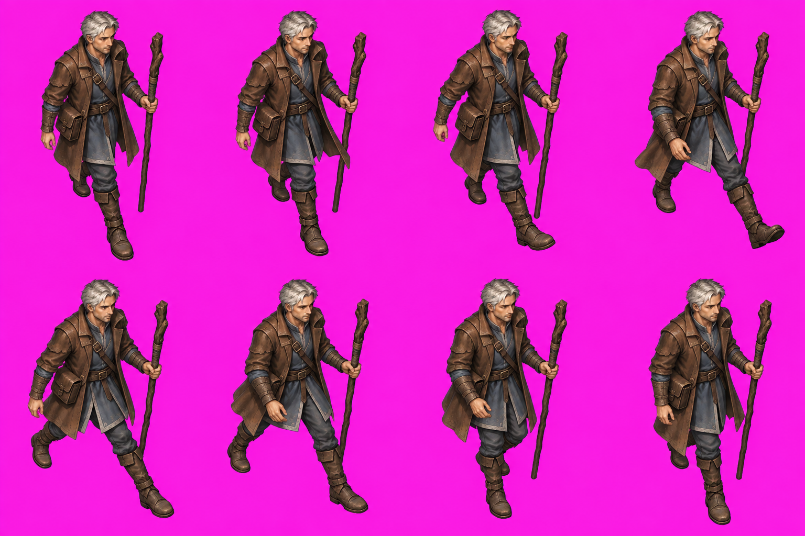
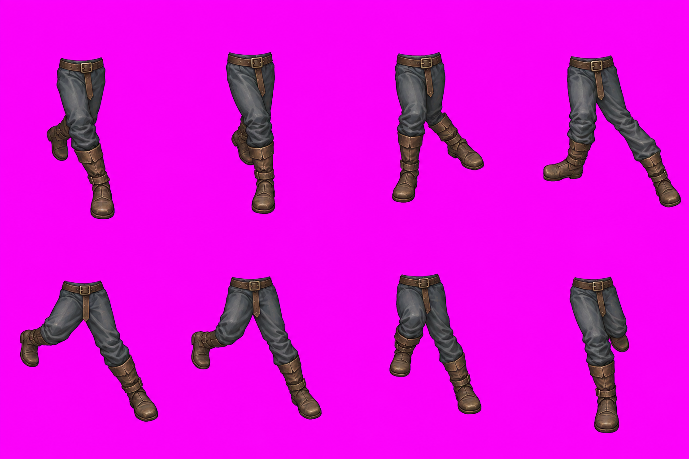
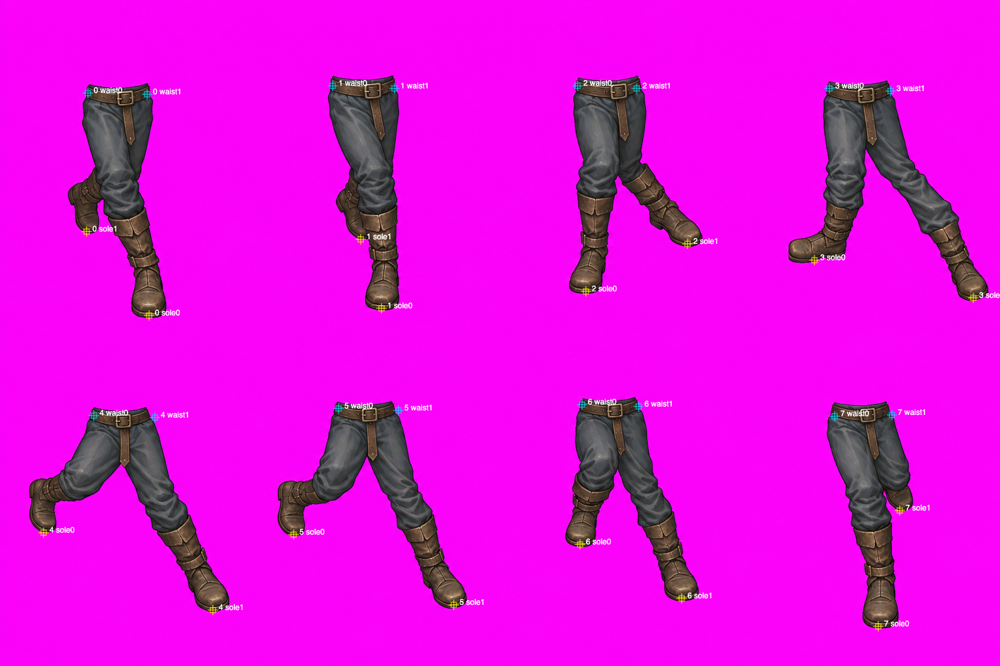
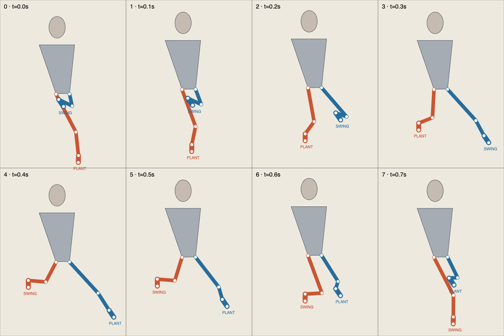

Godot shipping target · Pixi test harness · C, SE candidate only · two of two generation calls used.
The corrected sheet still slides. Even allowing either visible boot and conservative annotation uncertainty, the second stance has at least 7.4cm drift, above the frozen2cm limit. No key is accepted for the pilot.
A: full-body keys. B: isolated lower-body keys registered from belt landmarks, with constant scale. Magenta is the unprocessed opaque source background; this is not a chamber composite or alpha pass.


Cyan: belt endpoints. Yellow: visible sole centres. Boxes show ±4 native pixels. No foot-specific recentering.

